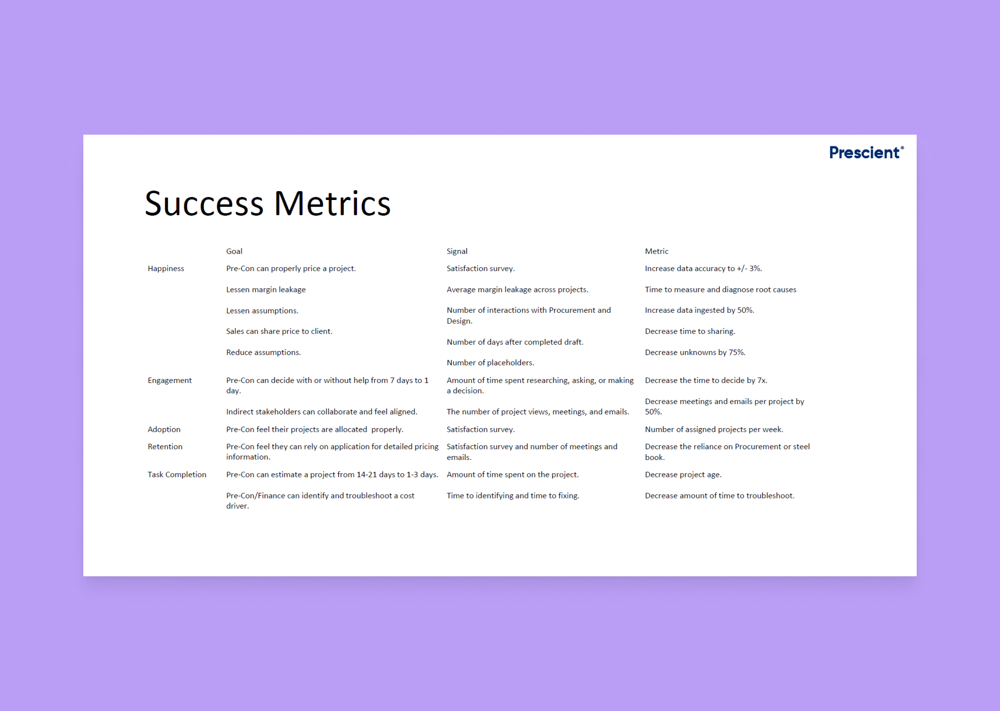

Costing
Prescient Co., 2019Confined to a 22-tab spreadsheet, I designed an app to help Estimators find cost drivers and reduce margin leakage.

The Problem
Prescient Co. is a manufacturing and construction company. The Pre-Construction team uses a spreadsheet to derive a project cost. They enter model data into a series of calculators built around the Prescient system. In turn, this provides our users with an estimated cost for a building. If selected, Prescient will manufacture and build it.
I worked as the lead designer to research, design, and test the new application. My team consisted of engineers and a business analyst to research and prototype.

Business Objective
In the beginning, I met with the team to uncover the requirements and the goal of the project. We help estimators identify cost drivers and help the business reduce margin leakage. From those talks, the goal became obvious:
'Accurately quantify and cost the Prescient system and other products.'
To ensure alignment across the team, I wrote a product brief with the business analyst. The summary gave the team a mutual understanding. The executive team reviewed it and presented any feedback and concerns.

Success Metric
Inside the brief, I measured our success on three statements.
Context
Research began by meeting with the estimators on the pre-construction team. We had regular conversations about learning their role, responsibilities, and goals. They are the primary users, but we met with other groups and continued our research in the same fashion. Early user research showed us many various problems:
I placed each group into their persona with a focus on the estimators. I communicated each persona to the team and updated them to reflect any new insights.

Constraints
In my first product evaluation, I found many issues. The product was tough to navigate, the workflow didn't align with our users, and it wasn't useful. I focused the design on collaboration and instilling trust in the data.
Outside design, the data imported wasn't correct. With further research, we discovered a frail database. We met the VPs and directors to discuss the urgency surrounding the problem. After a resolution, we hired a developer dedicated to helping fix our database.
Ideation
With our goals set, I started creating mockups and prototypes. I went through several feedback loops and iterated to complete a workflow to test. Several iterations later, I examined the experience to confirm assumptions.
The purpose of the test was to examine the navigation, configurations, and summary. The analysis concluded in a single day, and we were able to put several assumptions to rest. Some of the tasks could have been clearer, and the prototype could be more flexible, but we achieved our goal.
All participants found the application clean and organized. By automating their spreadsheet, we can give them time back to analyze the data and spot trends. Yet, users need to understand where they are and how to get to their destination. The 'back and forth' navigation was confusing and strenuous, causing them to struggle. Once completed, they wanted a sense of gratification and received nothing. While the test did not yield the results we hoped, the new data and feedback will direct us.

Delivery
I continued to make changes and worked with the development team and the estimators. I tracked the user stories and updated the acceptance criteria. At the end of the year, we delivered an Alpha version of the application. We granted the permissions to the team and would stress test the platform. With a single person in QA, the team examined for bugs and data problems.

Impact
Overall, users felt more confident. The data accuracy became closer, and the navigation felt more fluid. Soon after release, we were laid-off. Give more time; we wanted to track the costs over and work towards Prescient integrations. Backlog items included analytics to follow the product's usage to rework the workflow. In three months, we believed this project would have solved the other problems.